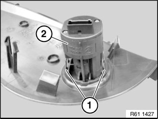
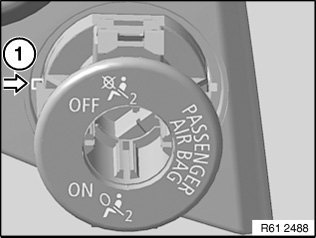

61 31 038 Removing and Installing/Replacing Switch for Passenger Airbag Deactivation
6Foto1 31 038 Removing And Installing (Replacing) Switch For Passenger Airbag Deactivation

WARNING:
Read and comply with safety regulations for handling airbag modules and pyrotechnical belt pretensioners.
Incorrect handling can activate airbag and cause injury.

Necessary preliminary tasks:
- Disconnect battery negative lead
- Remove side cover on instrument panel

Unlock catches (1) and feed out switch for passenger airbag deactivation (2) to front of cover.
Installation:
Make sure switch for passenger airbag deactivation (2) is correctly seated in cover.

Installation instructions for replacement only for E63/E64 with production date up to 01/2010:
A groove must be filed in the trim at location (1).

Replacement:
Remove lock cylinder for passenger airbag deactivation.